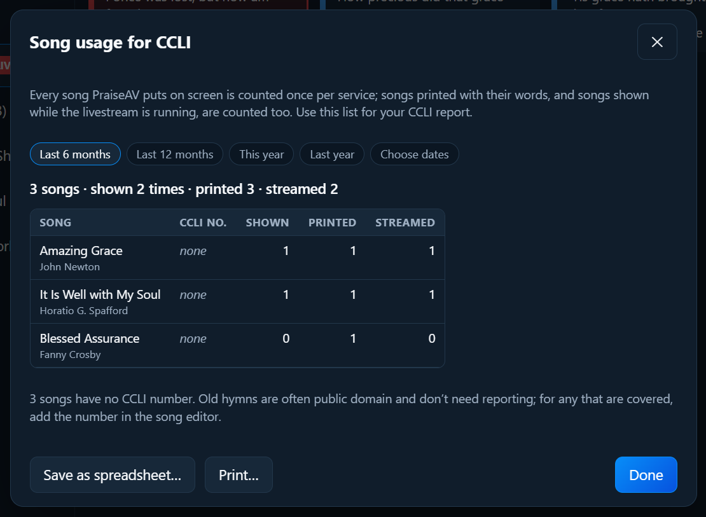

Building a service
CCLI report
If your church has a CCLI Church Copyright Licence, CCLI asks you to report the songs you use. PraiseAV keeps count for you.
Click Song usage for CCLI… at the bottom of the Songs tab.

What’s counted
- Shown: each song once per service, the first time it goes on screen.
- Printed: when you print song words (a service sheet, or a running order with words).
- Streamed: when a song is shown while the Livestream screen is open or an ATEM is connected. This is for a CCLI Streaming Licence.
Choosing the dates
Click Last 6 months, Last 12 months, This year, Last year, or Choose dates.
Using it
- Save as spreadsheet… saves the list as a file that opens in Excel, LibreOffice or Google Sheets.
- Print… prints it.
Copy the songs into CCLI’s online reporting, or keep the file for your records.
The counts are kept on your computer only. PraiseAV doesn’t send anything to CCLI.